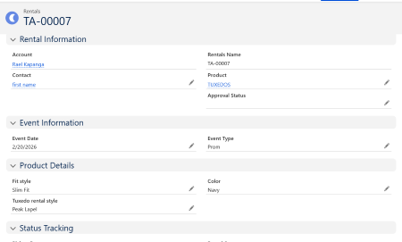
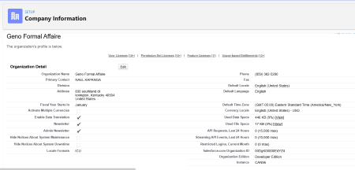

Rental Business CRM Project
Project Overview
One of my main projects was building a rental business CRM system in Salesforce. I created custom objects to manage rentals, customers, and payments. This allowed me to simulate how a real business would track its operations.
I configured relationships between objects to ensure that rental records were connected to customer accounts.
Designed and configured a Salesforce Lightning org to manage the full rental lifecycle for suits, tuxedos, and wedding events. The goal was to automate manual processes, improve cross team collaboration, secure customer data, and enhance reporting visibility for management decisions.
Geno Formal Affair uses this org to manage customers, rentals, pricing, and discount approvals, while maintaining efficient communication between the Sales, Marketing, and Customer Service departments.
System Design & Configuration
Category Key Deliverables
• Data Model Custom object Rental linked to Account (Master–Detail) and Contact (Lookup). Separate record types for Suit Rentals and Tuxedo Rentals with unique page layouts.
• Automation (Flows) Four Record Triggered Flows: (1) auto set rental status to Order Placed, (2) mark Past Due after rental duration, (3) update to Returned, (4) send overdue email reminders.
• Approvals Two Approval Processes: (1) Rental Extension (>7 days) requiring Manager approval, (2) Wedding Discount (>15%) requiring Manager authorization and email alerts
• Validation Rules Enforced date ordering, rental duration limits, and event pickup logic to prevent data corruption.
• Security Model Role Hierarchy (CEO Manager Sales Marketing Support). OWD: Account Private; Rentals Controlled by Parent; Products Read Only. Sharing Rules grant read access to Marketing and Customer Service
• Profiles & Permissions Custom profiles for CEO, Manager, Sales, Marketing, and Customer Service. Used Permission Sets for targeted access to reports and admin features.
Business Impact
• Automated 90% of rental lifecycle updates, reducing manual effort and errors.
• Enabled cross team visibility through structured role and sharing rules.
• Improved customer response time with automated emails and dashboard insights.
• Provided actionable data for management to forecast rental volume and trends
Tools & Features Used
- Salesforce Flows
- Approval Processes
- Validation Rules
- Record Types
- Reports & Dashboards
- Field Level Security
Automation and Validation
I built record-triggered flows to automatically update the rental status to "Past Due" when the due date passed. I also created validation rules to prevent users from entering incorrect dates.
This helped me understand how automation improves efficiency and reduces human error in business processes.
Future Improvements
In the future, I would like to expand this project by adding dashboards and reports to visualize rental performance. I also want to create more advanced automation such as reminder notifications and approval processes.
This project helped me move from basic configuration to thinking like a real Salesforce Administrator.
My Salesforce Skills
- Creating Custom Objects
- Building Flows & Automation
- Validation Rules
- Reports & Dashboards
- User Roles & Profiles
Preview of Rental Custom object
Rental Details

Company Information
